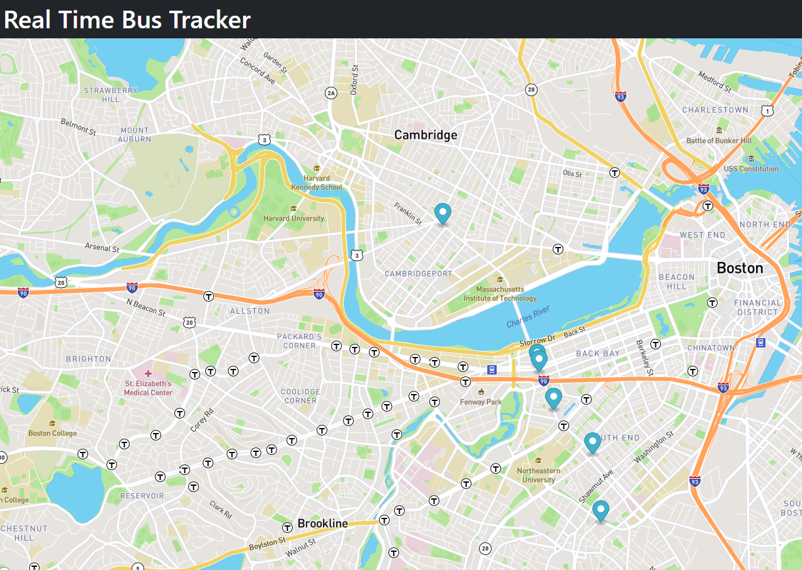

PacMen Factory Exercise
This project is a representation of using array methods and techniques for manipulating the DOM. We have written functions to create PacMen images, add them to an array, and update their location and apearance to create animation.
Eye Exercise
This project is a simple representation of dynamically changing the styles of an element using javascript. We've created and styled divs to project the appearance of two eyes, and using javascript we are dynamically changing the location of the eyeballs.

Real Time Bus Tracker
This project tracks the location of the Boston MBTA busses in real time using async functions awaiting data from mbta.com and Mapbox API.